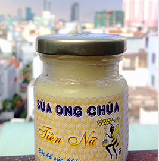

Sữa ong chúa

- THÔNG TIN SẢN PHẨM
- Sữa ong chúa: 300ml
Giá: 100,000đ
Sữa ong chúa nguyên chất 100% từ Hoa cà phê, nuôi trồng và khai thác từ trang trại tại Tây Nguyên, Việt Nam.
Thông tin chi tiết
"Vị Ngọt Thiên Nhiên Thay Thế Đường"
Mật ong Mandafood là mật ong nguyên chất 100% từ Hoa Cà Phê, được nuôi trồng và khai thác tại rừng Tây Nguyên, Việt Nam. Mật ong cà phê thường được yêu thích hơn các loại mật ong khác vì độ sánh mịn và mùi thơm nồng nàn. Đặc biệt, mật ong cà phê chỉ khai thác được trong 2-3 tháng đầu năm nên khá hiếm và thường có giá cao hơn các loại mật ong khác. Ngoài ra, Hoa cà phê hoàn toàn không bị xịt thuốc trừ sâu như hoa từ cây ăn trái, nên khi ong hút mật từ hoa cà phê, mật ong sẽ không bị ảnh hưởng bởi hóa chất độc hại.
Giá trị dinh dưỡng 100g mật ong
Năng lượng 304 Kcal
Glucose 82.12g
Chất xơ thực phẩm 0.2g
Chất béo 0 g
Protein 0.87g
Nước 17.10g
Vitamin B2 0.038mg
Vitamin B3 0.121mg
Axit Pantothenic 0.068mg
Vitamin B6 0.024mg
Axit Folic 0.12mg
Vitamin C 0.5mg
Canxi 6 mg
Sắt 0.42mg
Magie 2 mg
Phospho 4 mg
Kali 52 mg
Natri 4 mg
Kẽm 0.22mg
Một số công dụng tuyệt vời từ mật ong nguyên chất:
1. Dùng mật ong nguyên chất thay thế đường trong nấu ăn hay chế biến thức uống:
Chất ngọt trong mật ong là chất ngọt hoàn toàn tự nhiên, không giống đường mía, không gây các bệnh tiểu đường, cao huyết áp… Ngoài ra, mật ong giúp tăng hương vị món ăn và cung cấp nhiều chất dinh dưỡng cần thiết cho cơ thể:
- Các món ăn thường dùng mật ong: cá kho, gà chiên, sườn nướng, vịt quay, gà quay…
- Dùng mật ong pha các loại nước trái cây, uống mỗi ngày 1 cốc giúp cung cấp đầy đủ vitamin và cải thiện sắc da từ bên trong.
2. Ngăn ngừa ung thư, tăng khả năng miễn dịch, điều hòa huyết áp, cung cấp năng lượng cho quá trình đào thải của gan:
- Pha 2 thìa mật ong nguyên chất + nước ấm, uống vào mỗi sáng trước khi ăn sáng, giúp bảo vệ gan và tim mạch.
- Pha 1 thìa mật ong nguyên chất + 10ml nước cốt chanh vào mỗi sáng giúp thanh lọc, tăng cường miễn dịch.
3. Chữa viêm họng, viêm phế quản:
- Pha 2 thìa mật ong nguyên chất + nước cốt chanh (hoặc cam) vào nước ấm nóng, uống giúp làm mát phổi, giảm viêm phế quản.
- Lấy một quả chanh tươi, khía kiểu múi khế ở ở lớp vỏ ngoài, cho một vài thìa mật ong ngấm đủ toàn bộ quả chanh trong một cái chén, để khoảng 1-2 giờ sau đó cắt ra ngậm sẽ giảm ho ngay.
4. Giảm căng thẳng, tinh thần minh mẫn và ngủ ngon:
Pha mật ong nguyên chất với trà hoặc sữa tươi hâm nóng, uống vào mỗi sáng hay những khi mệt mỏi
5. Chữa viêm loét dạ dày, tá tràng: Trộn mật ong nguyên chất với bột nghệ đen (với người thể hàn), nghệ vàng (với người thể nhiệt), dùng liên tục trong 1-2 tháng có thể đạt kết quả chữa bệnh đến 80%.
Cách bảo quản:
- Bảo quản nơi khô thoáng, nhiệt độ dưới 26C
-Tránh ánh sáng và ánh nắng trực tiếp
Thành phần:
100% mật ong cà phê nguyên chất
Thể tích:
300 ml
HSD:
02 năm kể từ ngày sản xuất